Basics
游戏刚诞生的时候，就已经考虑到了绘制和渲染的问题了。即便那个年代的硬件条件远不如现在，游戏开发者们仍然尽力表现游戏画面。
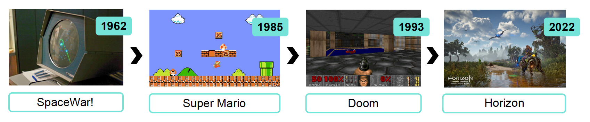
随着技术发展，如今的渲染系统已经相当丰富，但也更加复杂了。
思考：有没有游戏不需要渲染系统的？
有的，比如 MUD 这一类的文字游戏等。
在图形学理论中，渲染的特点为：
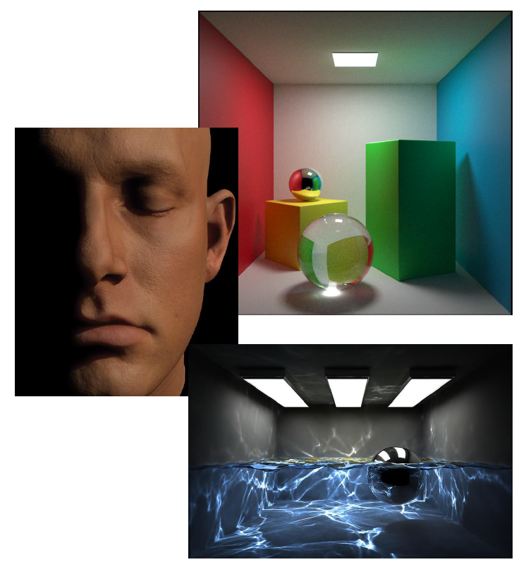
- 专注于物体的某一类型的效果
- 聚焦于表示（算法）和数学正确性
- 没有严格的性能要求
- 实时(realtime)（>= 30 FPS）/ 交互式(interactive)（10 FPS）/ 离线(offline)渲染
- 核外渲染(out-of-core rendering)：数据量太大，需要多台机器存储
CG 中的渲染理论正是游戏引擎渲染系统的基石！
游戏引擎中的渲染挑战
和 CG 渲染理论不太一样：
-
游戏的某个场景中可能包含成千上万的物体，而每个物体要实现的效果类型，背后的渲染算法以及后处理等可能还不一样，所以非常复杂
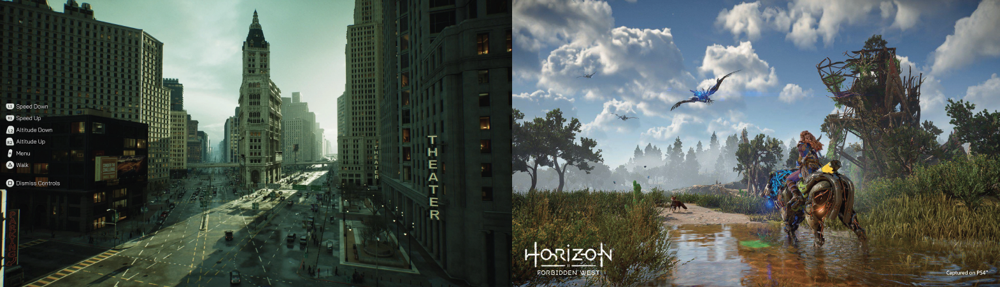
-
理论上可能只需确保算法正确就行了，但在实际中还得考虑结合了 CPU 和 GPU 的复杂的现代计算机架构
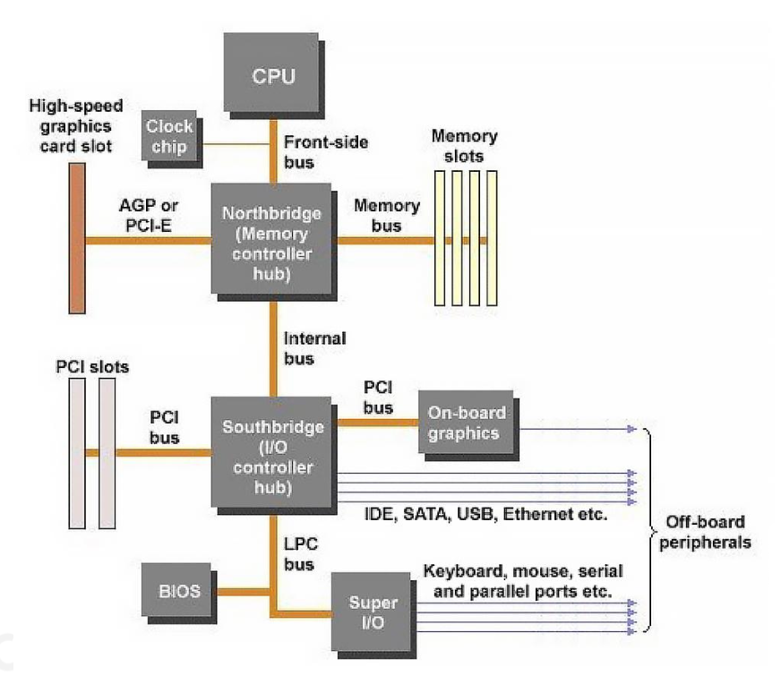
-
游戏需要保持帧率稳定（30 FPS / 60 FPS（电竞）/ 120 FPS（VR）），并且我们对游戏画质提出了更高的要求（1080P -> 2K -> 4K -> 8K）
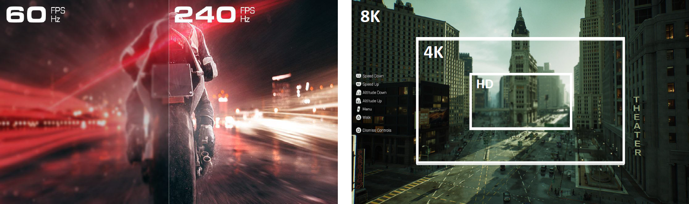
- 设计理念：渲染系统的计算时间必须被限定在一个固定的预算中，要确保不能够超过这个时间预算，否则帧率就会降低，从而影响玩家的游戏体验
-
每一帧的时间预算分配问题
- CPU 带宽和内存占用的有限访问
- 渲染系统不能占用全部的资源，不然其他子系统（游戏玩法等）就跑不了了
- 自动运行 profiling（性能分析）工具
- 游戏逻辑、网络、动画、物理和 AI 系统是 CPU 和主存的主要消费者
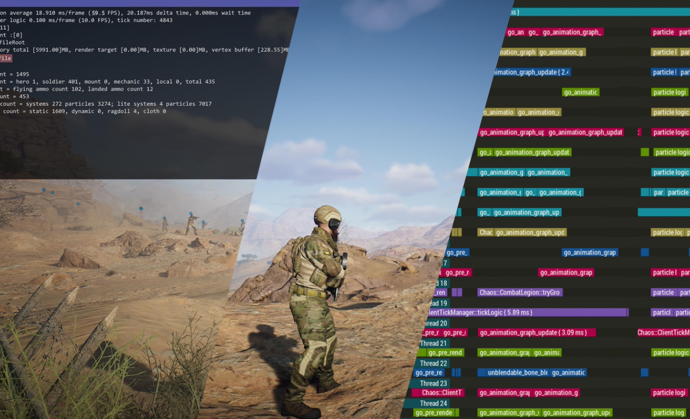
注
以下介绍的内容都是经过工程实践过的，不只是一种理论模型。也就是说，游戏引擎中的渲染系统是一个高度优化的实用软件框架，以满足现代硬件（PC、主机和移动设备）上游戏的关键渲染需求。
不会介绍的内容
- 卡通渲染(cartoon rendering)
- 二维渲染引擎
- 次表面(subsurface)
- 头发 / 毛发
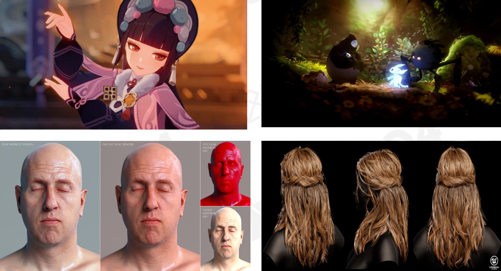
Building Blocks
渲染的构成要素（下图来自 GAMES101 课件）：
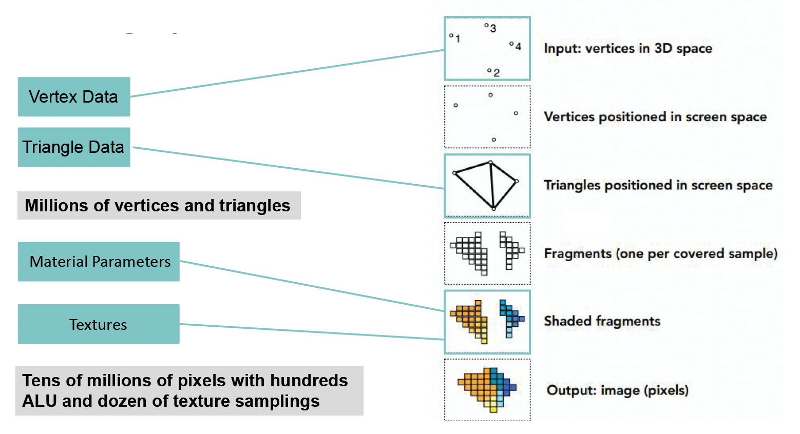
一句话总结：顶点 -> 面 -> 屏幕上的像素点（到这一步叫做光栅化(rasterization)）-> 材质(material) -> 纹理(texture) -> 成品。
渲染最核心的工作是计算，包括以下几个方面：
-
投影(projection)和光栅化(rasterization)
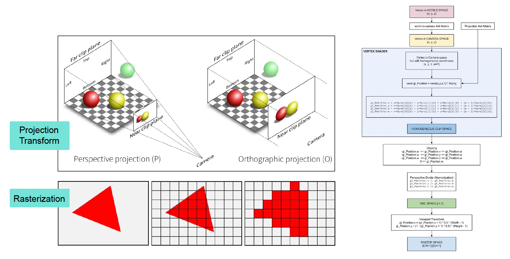
-
着色(shading)
- 下图是一个着色器代码的例子，里面包括了
- 常量 / 参数
- ALU 算法（比如计算光线的等等）
- 纹理采样
- 分支
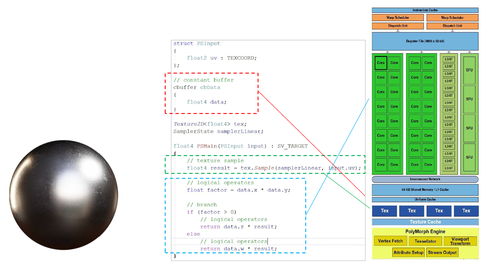
- 下图是一个着色器代码的例子，里面包括了
-
纹理采样(texture sampling)
- 屏幕中的一个像素对应到远处物体的多个像素
- 如果不去做（低频）滤波 / 反走样的话，面向某一物体由近及远或由远及近的移动可能会导致画面的抖动
-
步骤：
- 使用两个最近的 mipmap 层级（所以一张纹理贴图可不止要存储一层）
- 在两个 mipmap 上同时使用双线性插值(bilinear interpolation)
- 在结果中线性插值
-
因此，一次纹理采样需要访问 8 个数据点，做 7 次插值（原因可见我的 CG 笔记对应章节）
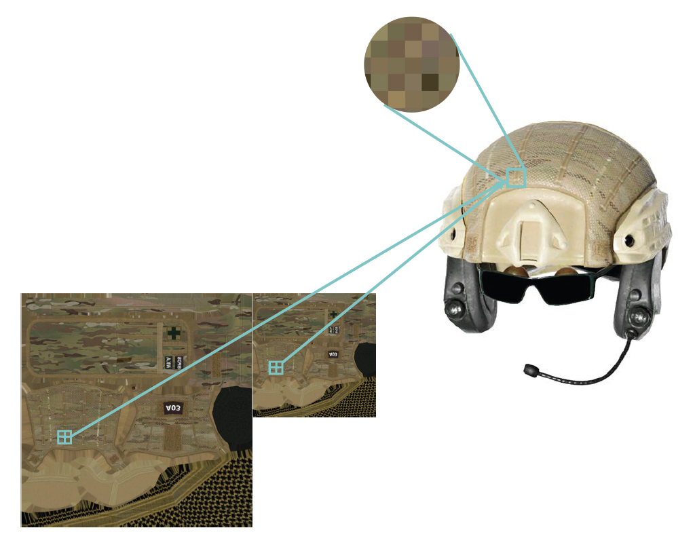
Hardware Architecture
注意
为了方便，之后笔者可能会混用「GPU」和「显卡」的概念，但两者还是有些差别的（后者包含前者，前者是后者的核心）。不过应该不影响阅读吧hh
GPU 是专门用于处理大规模任务的硬件。
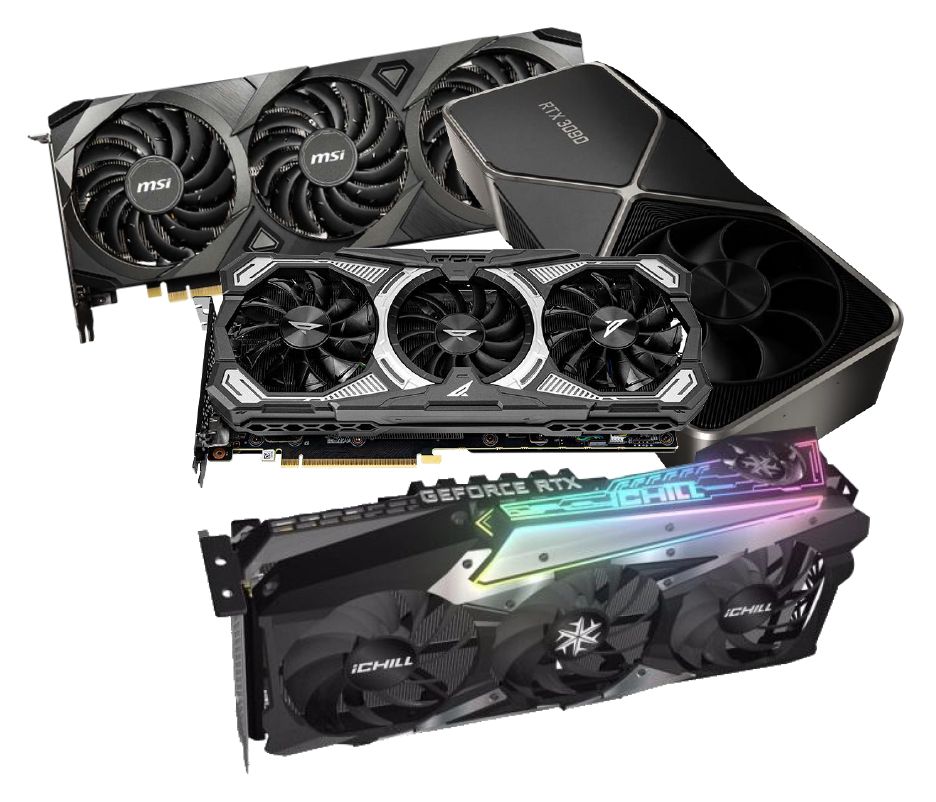
先来介绍和 GPU 密切相关的两个概念：
-
SIMD（单指令多数据(single insturction multiple data)）：描述具有多个处理元素的计算机，这些处理元素同时对多个数据点执行相同的操作
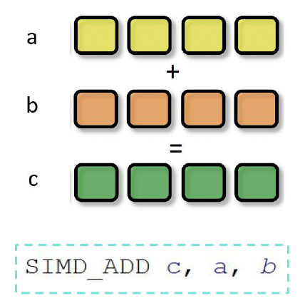
-
SIMT（单指令多线程(single insturction multiple thread)）：并行计算中使用的执行模型，结合了 SIMD 与多线程
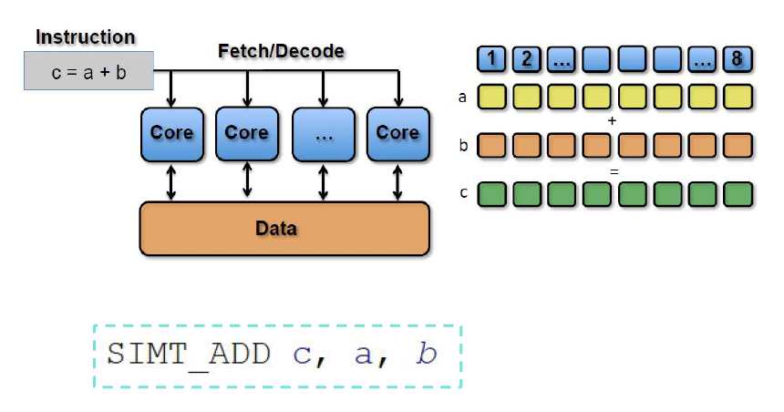
再来了解一下典型的 GPU 架构（以 Nvidia Fermi 架构为例）：
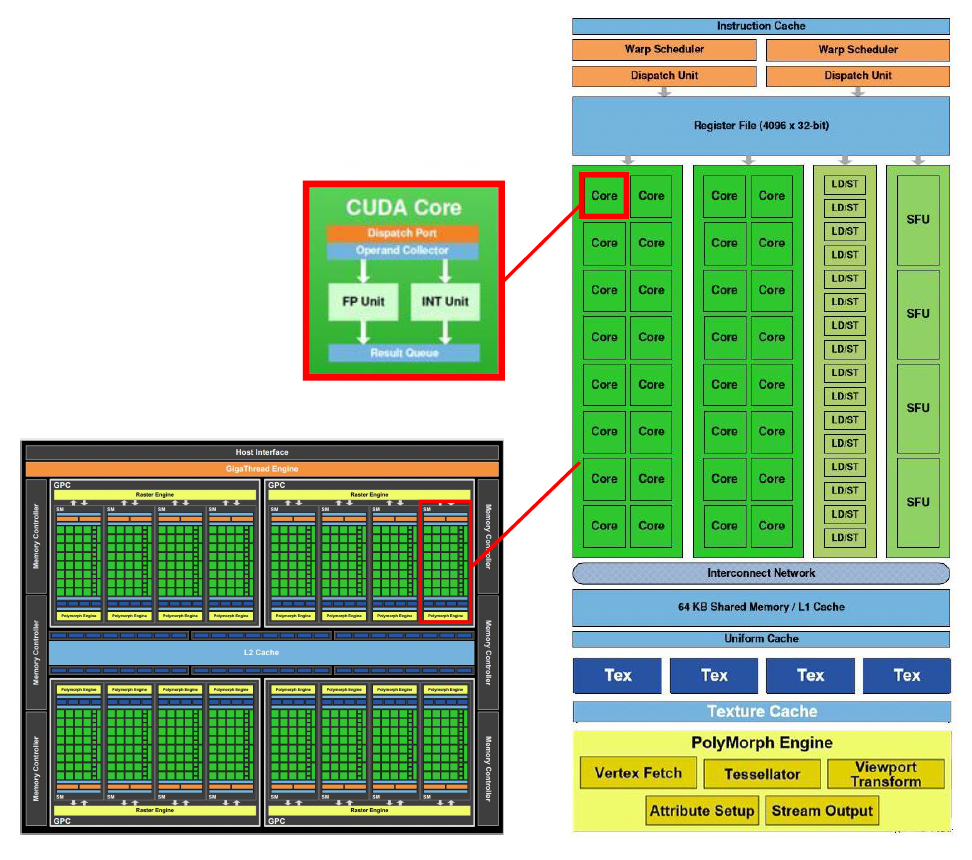
- GPC（图形处理集群(graphic processing cluster)）：用于计算、光栅化、着色和纹理的专用硬件块
- SM（流式多处理器(streaming multiprocessor)）运行 CUDA 核心的 GPU 部分
- 并行，可以通过共享内存互相通信
- 纹理单元(texture units)：能够获取和筛选纹理的纹理处理单元
- CUDA 核心(core)：能让数据通过不同处理器被同时处理的并行处理器
- 线程束(warp)：线程的集合
接下来值得一提的是 CPU 和 GPU 之间的数据流，因为数据流动是有成本的，而且成本可不小。
- 之所以有「数据流」这一件事，是因为我们的计算机几乎都采用冯·诺伊曼架构，该架构的一个特征是计算和数据的分离
- 这种架构的好处是简化硬件设计，但同时带来一个不可忽视的问题：很多计算都需要找数据，而数据的移动相对计算而言是很慢的
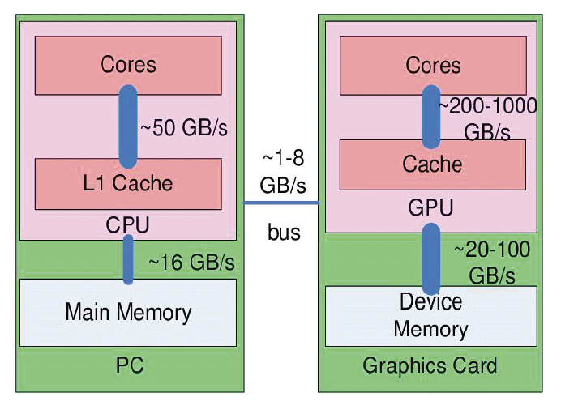
-
数据流包括：
- CPU 和主存之间：数据加载/卸载、数据准备
- CPU 和 GPU 之间：高时延、有限带宽
- GPU 和显存之间：高性能并行渲染
-
于是我们可以得出一个结论：如有可能，应尽可能最小化 CPU 和 GPU 之间的数据传输
- 比如尽可能让数据单向传输（比如 CPU 将数据发送给显卡后尽可能不再另外读取数据）
针对上述问题，我们引入一种叫做高速缓存(cache)的硬件。
- 虽然访问内存数据的速度很慢，但访问高速缓存数据的速度会快很多，计算时只需要从高速缓存中读取数据即可，这样就能显著提升性能
- 但高速缓存的大小相对较小，所以有时会出现计算所需数据不在高速缓存的情况，这时就又不得不从内存中获取数据了；我们称这种情况为高速缓存失效(cache miss)，而相对地能够读到高速缓存数据的情况就是高速缓存命中(cache hit)
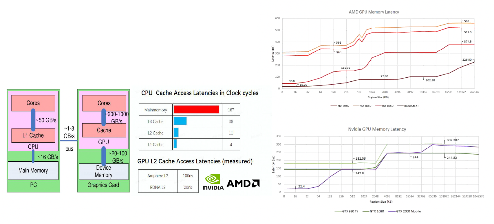
综上所述，和 GPU 相关的性能限制包括：
- 内存边界
- ALU 边界
- TMU（纹理映射单元）边界
- BW（带宽）边界
这些边界(bound)构成了一种「短板效应」：只要有一个地方速度太慢，就会拖垮整个系统的表现。
现代硬件管线：
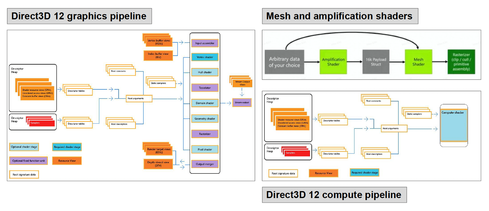
其他先进的架构：
-
主机端：
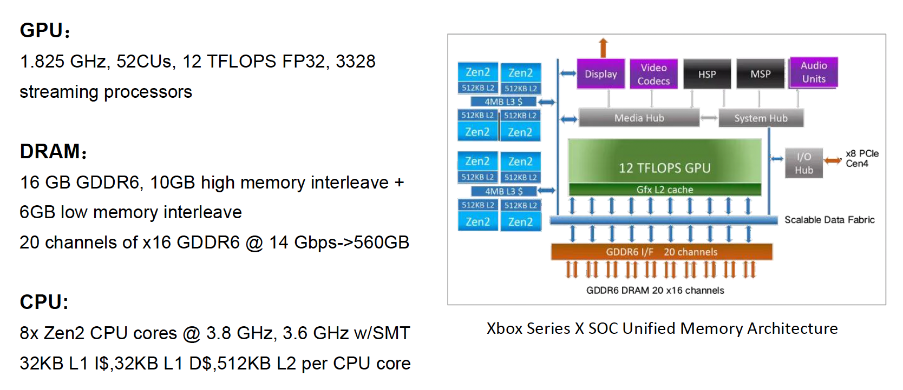
- 实现了 UMA（均匀内存访问）
-
移动端：
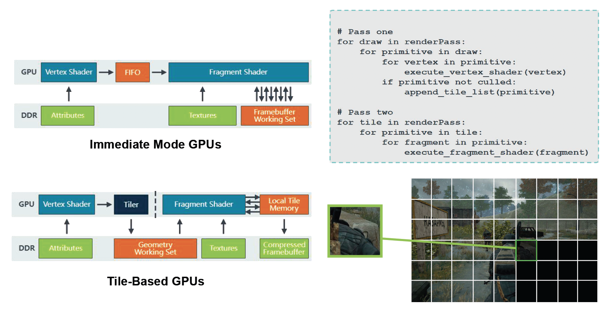
Renderable
上一讲中，我们介绍了如何基于组件描述一个游戏对象。其中有一个网格渲染组件(mesh rendering component)就是专门用来在游戏中绘制游戏对象的。尽管在不同游戏引擎中，这个名称会有所变化，但本质上都属于一种可渲染对象(renderable)。
一个可渲染对象由多个构建块组成。比如下面这个士兵有头盔、胡须、躯干等部位，而每个部位的渲染效果（材质、纹理等等）都是不一样的。
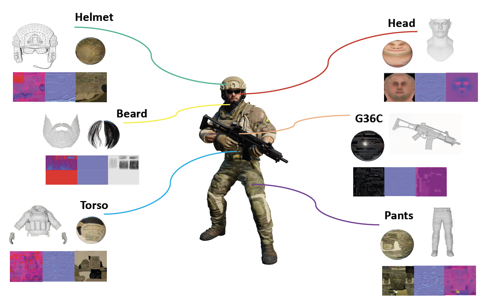
在游戏引擎中，最基础的表达形式是网格图元(mesh primitive)，比如下面对顶点、三角形的定义：
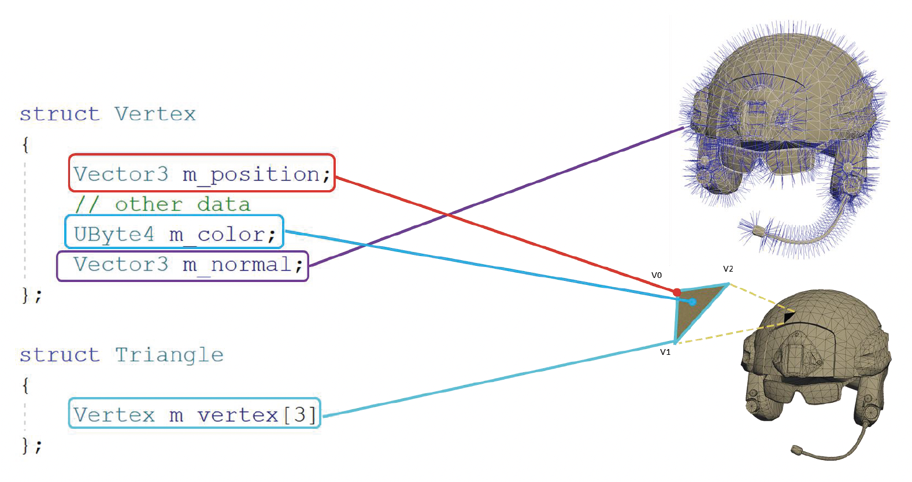
当然上面的存储方式比较笨。如果写过像 OpenGL, DirectX 的图形学代码的话，就会知道实际上是用顶点数据和索引数据来存储的，并且分别需要一个声明和一个缓冲区。具体来说就是把所有顶点数据放在一起，三角形只会存顶点的索引值，不会再次存储顶点数据（因为很多顶点会被多个三角形共用）。
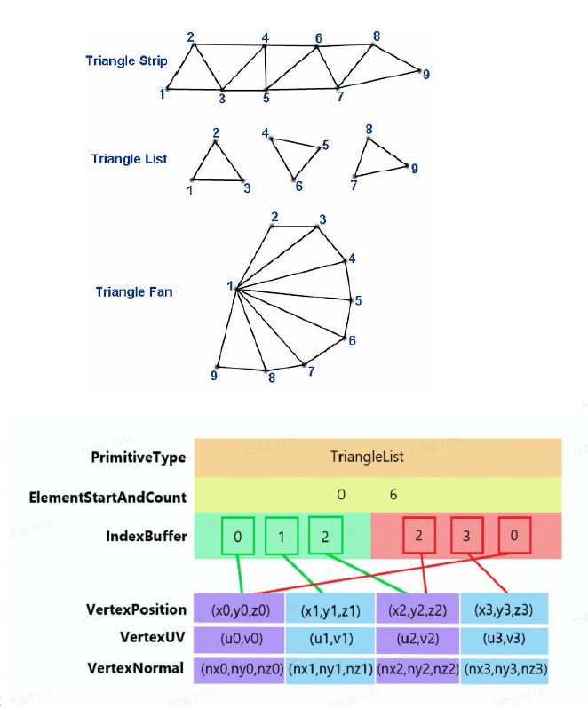
其实我们不必使用索引缓冲区，而是采用一种类似“一笔画”游戏的方式，即 triangle strip：按顺序访问顶点，对高速缓存友好。
另外值得注意的是，我们必须为每个顶点存储法线信息。尽管大多数时候可以通过计算三角形面法线的平均值来求出顶点法线，但之所以要这样做，是因为如果表面有一条折线（硬表面），两个重合的顶点却有着不同的法线方向，那么只记录三角形法线的方法就失灵了。
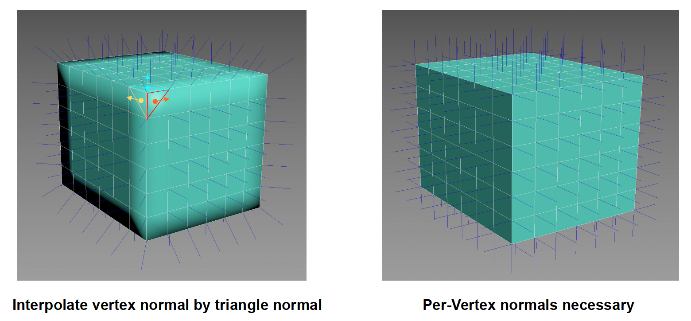
下一个要介绍的可渲染对象是材质(material)，它的作用是区分不同物体的外观和光泽。
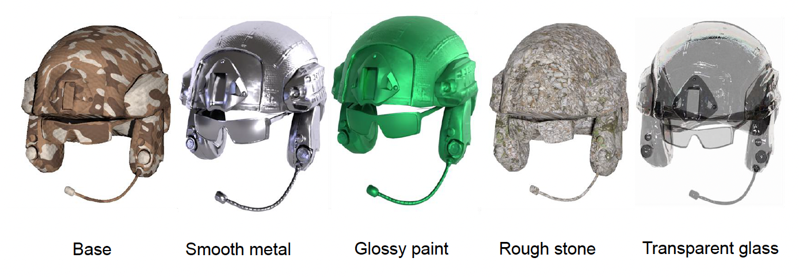
需要注意的是，不要将这里的「材质」和之后要介绍的物理材质(physical material)给弄混淆了：后者跟渲染没有关系，它负责的是摩擦力、弹力之类的东西。
材质系统经过多年的发展，已经有不少模型被提出来了。下面列举一些比较知名的模型：
- Phong 模型
- PBR 模型（一种基于物理的渲染）
- 次表面材质
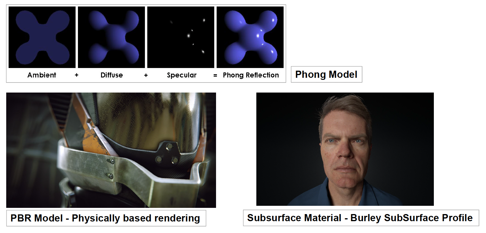
另外和材质息息相关的可渲染对象便是纹理(texture)。不同材质和纹理的排列组合，可以产生众多各异的渲染效果：
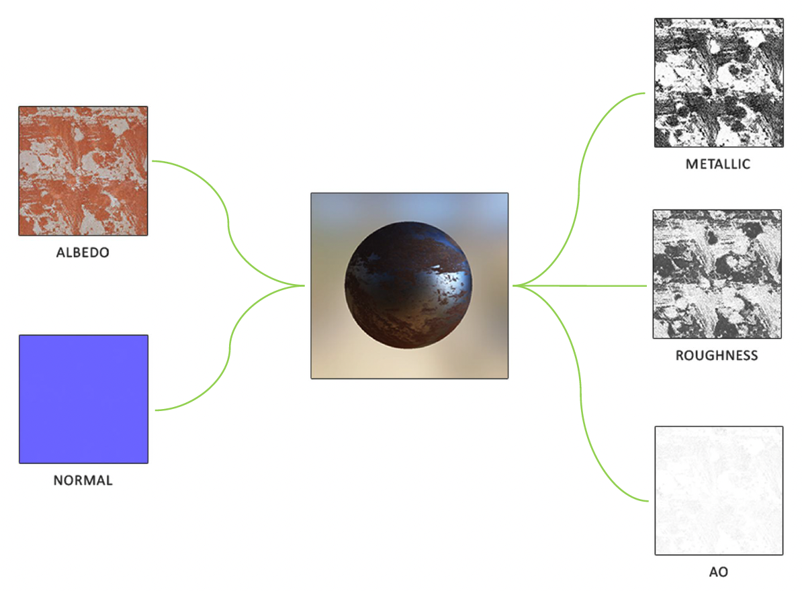
最后要来认识的，并且容易被忽视的可渲染对象是着色器(shader)。不同于材质和纹理，着色器的本质是一段源代码，但会被游戏引擎视为一种数据。
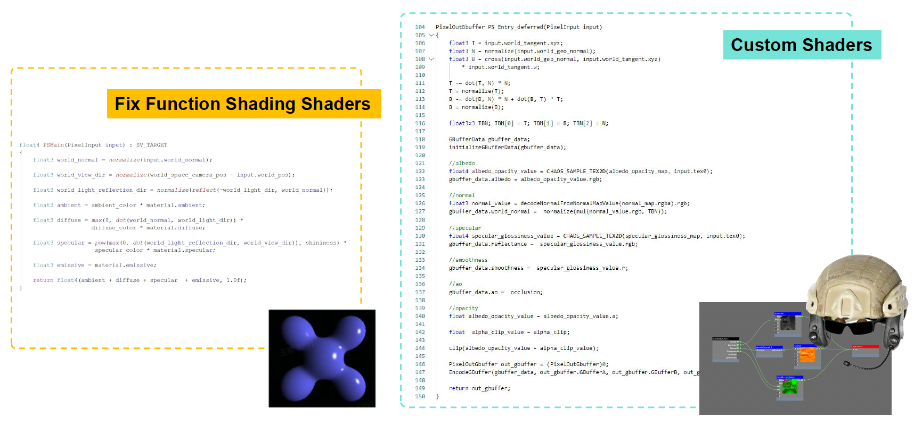
除了固定的着色器函数这一传统形式外，在现代游戏引擎中有一种叫做着色器图(shader graph)的工具。艺术家们可以像搭积木那样自由组合各种元素，最终形成完整的 shader 代码以表达所需要的材质。
Render Objects
有了这些可渲染对象后，我们就可以完整地渲染游戏中的任何物体了。但这些物体最终是要呈现在屏幕上的，而先前构建的模型是基于自身的局部坐标系的，所以中间还需做一些转换：
- 变换矩阵：局部坐标系 -> 世界坐标系
- 视图矩阵：投影到相机坐标系上
- 正交/透视投影：最终来到屏幕坐标系
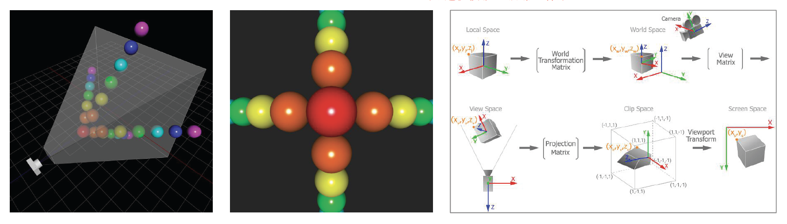
假如拿我们目前学到的技术去渲染一名士兵，我们期望得到的是左图的效果，但实际上得到的结果如右图所示，看起来特别假（感觉像用玉石做的）。
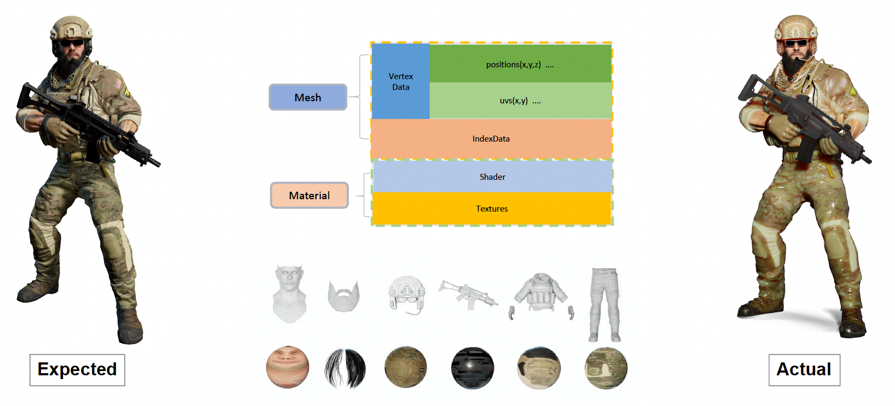
这是怎么回事呢？答案很简单：同一角色身上不同部位的渲染效果是不一样的，而现在这个士兵从头到尾都呈现同一套渲染效果，自然看起来很假。那么对于某个模型，该如何处理和显示其身上不同的材质和纹理呢？这就涉及到子网格(submesh)的概念。
- 我们会根据各部分材质的不同，会把一个网格划分为多个子网格，每个子网格都有各自的材质、纹理、着色器等
- 顶点和三角形存在一个大的缓冲区里，所以每个子网格只用到缓冲区里的一小段（根据偏移量(offset)访问）
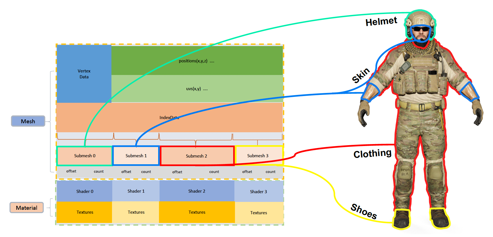
这会涉及到一个问题：同一场景中可能存在多个游戏对象，这些游戏对象都由一套材质、纹理之类的东西需要存到内存中。如果这些对象都是一样的，那么内存中就会有大量重复的数据，这就很浪费空间了。
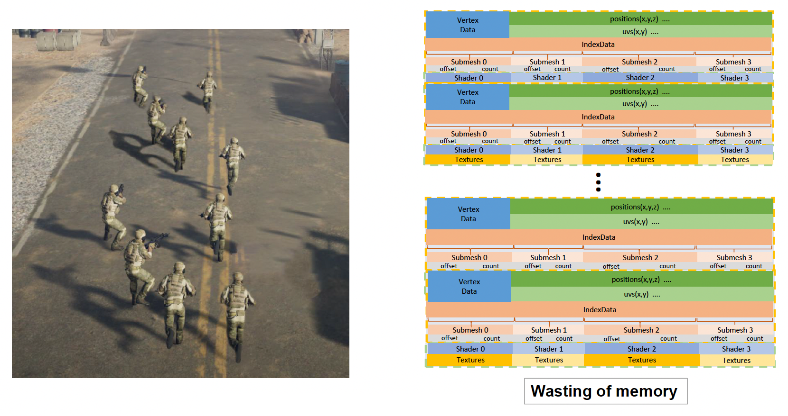
节省空间的方案是为同一类的可渲染对象设置一个资源池(resource pool)，比如网格资源池、着色器资源池、纹理资源池等等。这样多个游戏对象就可以共用资源池中的内容，无需重复存储数据了。
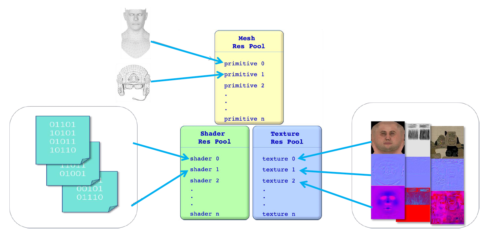
另一个重要的概念是实例(instance)。如下图所示，实际上场景中只有两类士兵，因此实际上只需要存储两类数据的定义即可；某一类相同的士兵们是这类数据的多个实例。
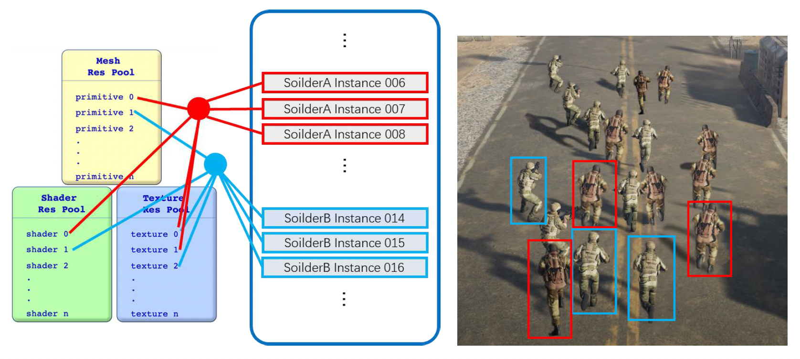
注：游戏对象，音乐/音效等也是一种实例。
渲染的时候，我们将场景中的物体按材质排序，这样能加快 GPU 的计算速度。之所以能加速，是因为 GPU 很懒，每次更改参数时都要停下来；按材质排序后，可以实现设置一次材质后，就连续绘制所有使用该材质的子网格，从而减少对显卡状态参数的更改次数。
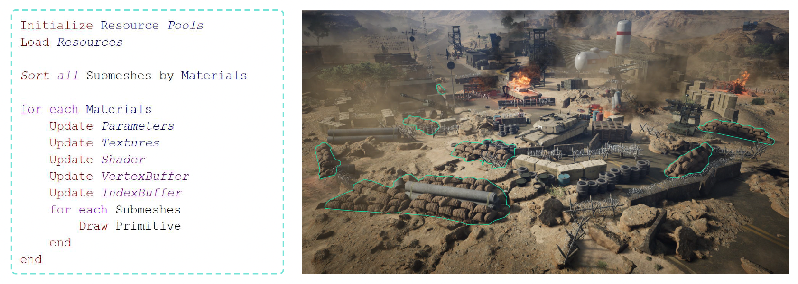
另一个利用 GPU 特性的加速技巧是 GPU 批渲染(batch rendering)，将场景中具有相同子网格和材质的所有实例一起渲染出来。
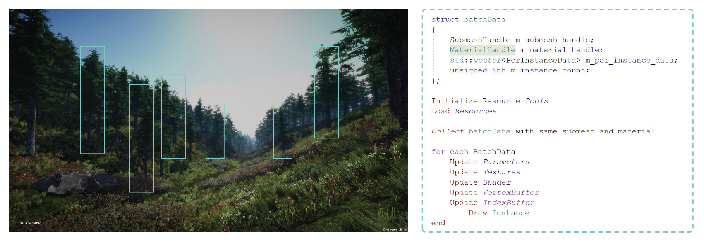
Visibility Culling
有了前面介绍的技术后，我们可以绘制一个小的游戏场景了。然而，这样的渲染并不高效，因为对玩家而言，我们只能看到相机视线范围内的场景，视线外的地方是看不见的，而那些看不见的东西不需要绘制出来。这便是可见性裁剪(visibility culling)的概念。这个概念还涉及到两个要素：
- 视锥(view frustum)：相机能看到的范围
- 包围盒(bounding box)：用于判断物体是否在视锥范围内
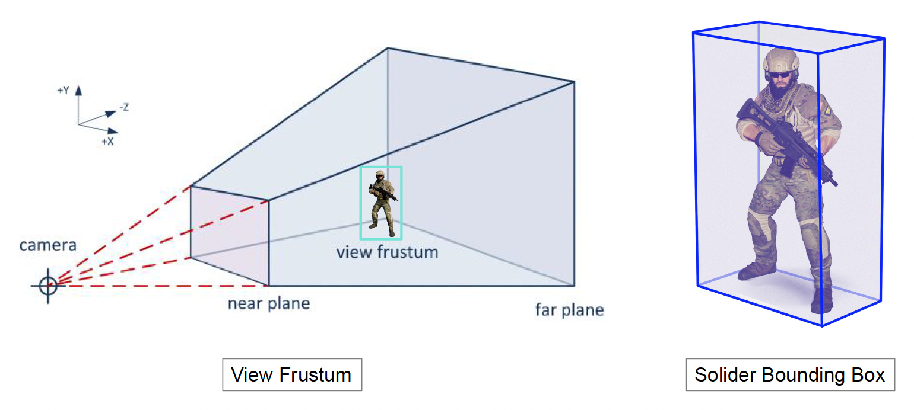
包围盒的种类很多，如下所示。其中从左往右看，包围盒的精度更高，但速度更慢且占用更多内存空间。
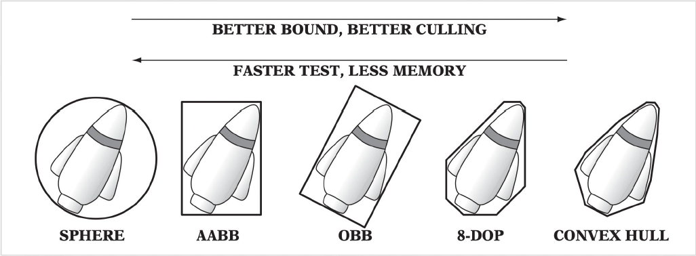
- 包围球
-
AABB（轴对齐包围盒(axis-aligned boudning box)）：
- 「轴」是指世界（全局）坐标系的 x, y, z 轴
- 只要存（对角线上）两个顶点就能构建出来，且计算效率很高，仅次于包围球
-
OBB（对象包围盒(object bounding box)）
- 凸包(contex hull)
包围盒有以下特点：
- 一种低成本的相交测试
- 紧贴物体
- 计算成本低
- 容易旋转和变换
- 占用内存少
BVH
为了进一步提高计算效率，我们可以引入上一讲介绍的分层结构(hierarchy)，对空间中的各个物体进行进一步的划分。这样在做裁剪运算的时候，就可以从一个树状结构中自顶向下地快速判断一个物体是否视锥范围内。
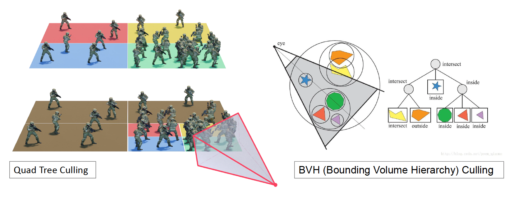
其中用的比较多的一种算法是 BVH（包围体层级(bounding volume hierarchy)）裁剪。尽管并不是最高效的算法，但是它重构速度快，适合用于场景中包含多个动态物体的情况；因为物体移动可能就要重新构建 BVH，而 BVH 能保证一旦创建好一棵树后，之后重构的成本尽可能低。
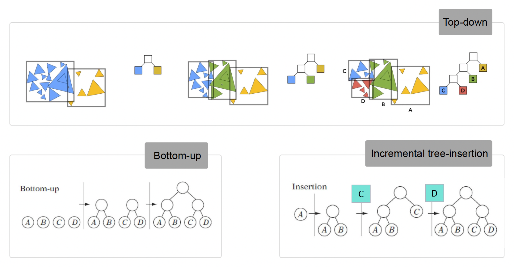
PVS
另一种可见性裁剪算法是 PVS（潜在可见集(potentially visible set)）。简单来说就是将空间划分为多个小格子（房间），格子之间通过大门(portal)相连。
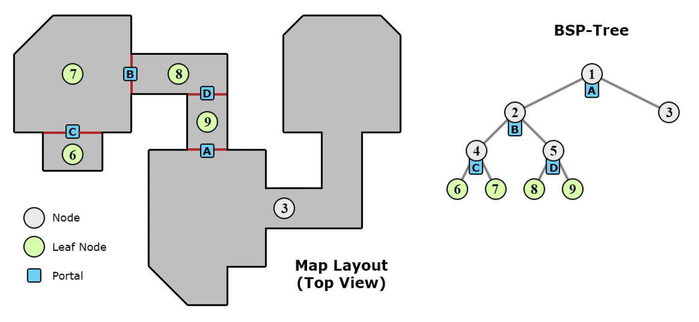
而 PVS 要做的是在当前房间中，判断能看到哪些房间。如下图所示，假如在 7 号房间，那么能看到的房间就是 6, 1, 2, 3，此时只需要渲染这些房间就行了。
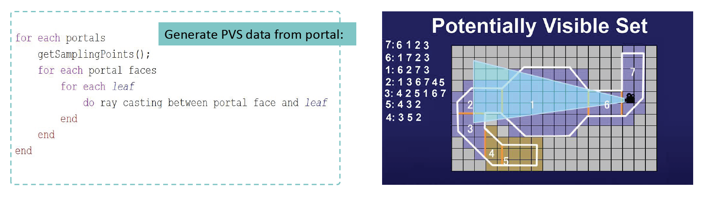
PVS 的优点可概括为：
- 比 BSP / 八叉树更快
- 更灵活，兼容性更强
- 可预加载资源
所以这个想法非常简单，也很符合直觉，并且执行效率很高。尽管现在直接使用 PVS 的游戏很少了，但这一思想依然出现在不少游戏中。比如有些单机游戏包含多个线性的关卡（尽管看起来像一个开放世界，但是角色只能在规定的地方行动）；玩家能经过的世界被划分为多个区域(zones)。当玩家从一个区域来到另一个区域时，有可能会卡一小会儿，这是因为不同的区域需要渲染的场景不一样，切换区域就要重新加载数据。
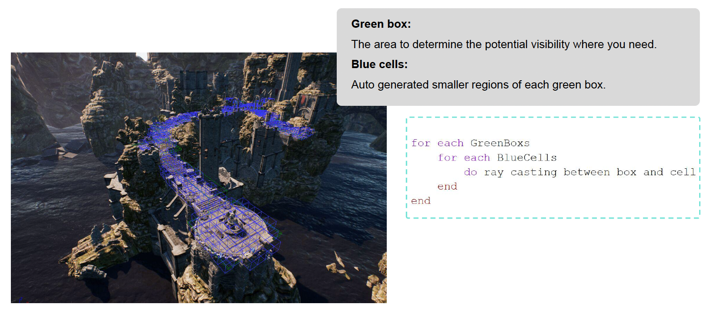
GPU Culling
前面介绍的算法都是比较经典的算法。现在随着技术发展，我们可以利用 GPU 的并行能力构建更加精密高效的裁剪算法。
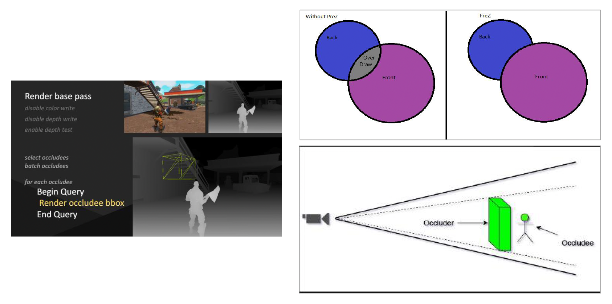
其中一种著名的技术是遮挡查询(occlusion query)，即 GPU 接收大量物体后，会返回一个位数组（由 0 和 1 组成），直接指示每个物体是否可见，相比传统精巧的 CPU 算法，GPU 的并行计算速度更快。
另一种重要的概念是 early-z，其思想是利用显卡的“聪明能力”：当一个像素被其他物体遮挡时，就跳过对它的绘制。
- 实现的基本方法是先进行一次基础的渲染，禁用颜色写入但启用深度测试，仅将场景的深度信息（深度图）绘制出来
- 随后，在正式绘制任何物体时，只要物体的像素深度值比已存储的深度值靠后，整个像素乃至整个物体就可以被廉价且快速地跳过绘制（裁剪掉）
Texture Compression
接下来要讲的一个重要概念是纹理压缩(texture compression)。我们可以对比传统的图像压缩算法，比如 JPG 和 PNG，它们的共同特点是：
- 压缩率高
- 保证图像质量
- 专门用于压缩和解压缩完整的图像
-
不支持随机访问（也就是说没法立马知道任一位置上的像素值）
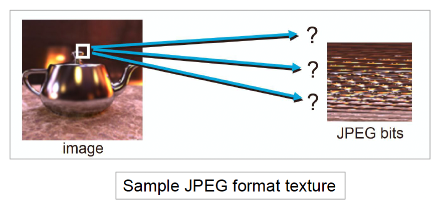
由于加粗的这条特性，这些算法不适合用于压缩纹理，所以纹理也并不是以图像形式存储的。设计纹理压缩算法时，需要考虑：
- 解码速度
- 随机访问
- 压缩率和视觉质量
- 编码速度
常用的纹理压缩算法是块压缩(block compression)。最经典的方法是将纹理划分为 4x4 的小块，然后找出颜色最暗和最亮的两个点，而其他的点就是在这两点之间做插值，用于近似表示相应色块的颜色。
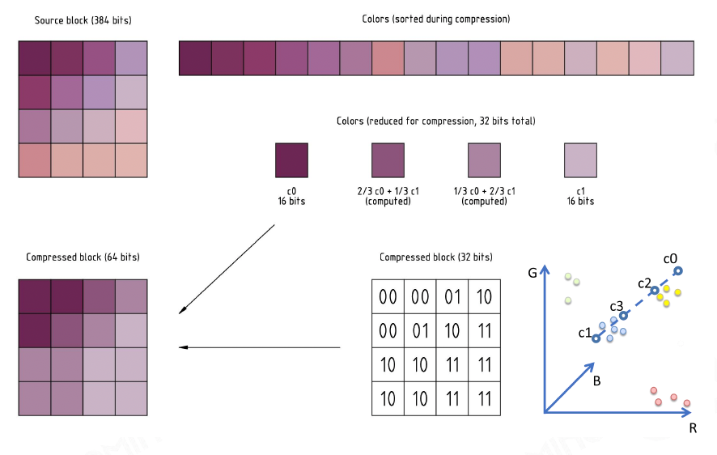
常见的基于块的压缩格式有：
-
PC：
- BC7（更现代，可以做到 CPU 上的实时压缩）
- DXTC（比较旧）
-
移动设备：
-
ASTC（更现代）
- 分块不再是严格的 4x4，可以是任意形状
- 压缩效果好，但不能实时压缩
-
ETC / PVRTC（比较旧）
-
Authoring Tools of Modeling
知道渲染的原理后，我们得需要工具来实现。下面就来介绍一些常用的建模手段和工具。
-
多边形建模(polymodeling)
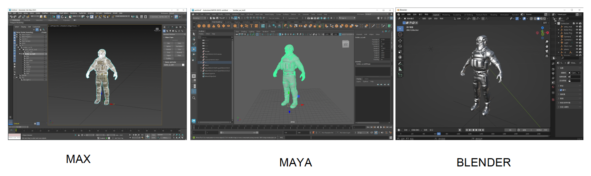
-
雕塑(sculpting)
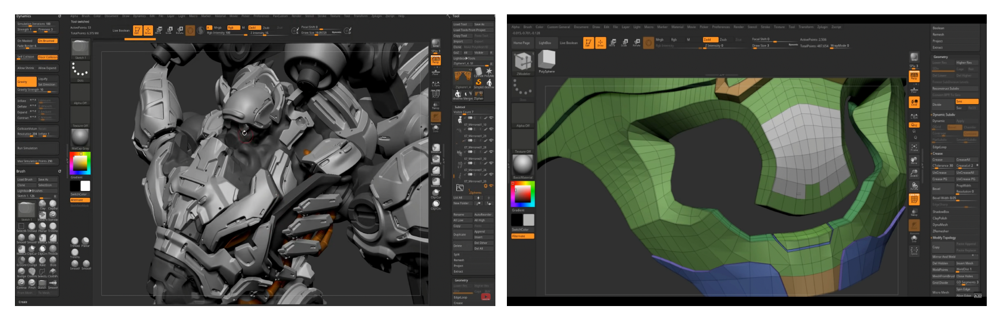
-
扫描(scanning)
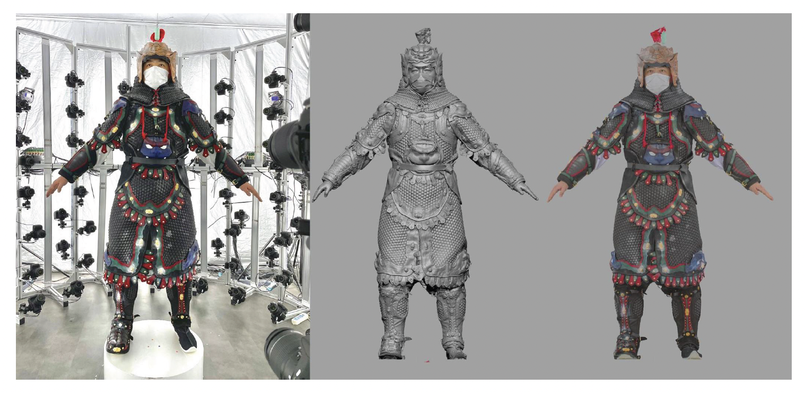
-
过程建模(procedural modeling)
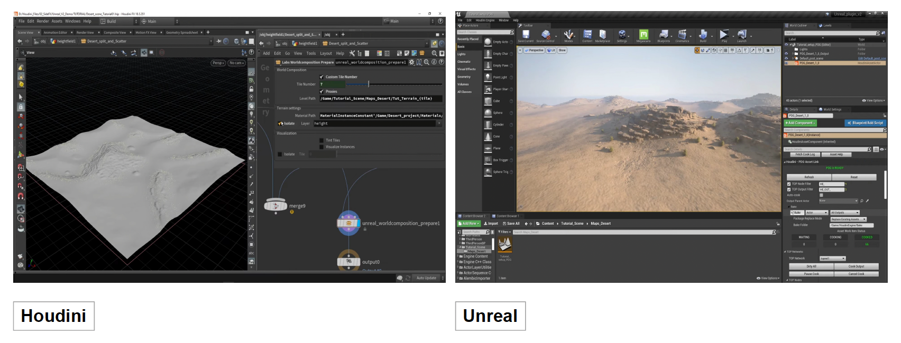
比较各方法的优缺点：
Cluster-Based Mesh Pipeline
随着游戏开发技术的进步，特别是 ZBrush 雕刻和 3D 扫描技术的普及，美术资产拥有了近乎无限的细节，比如现代的开放世界游戏中，每帧需要渲染的数据量相比传统线性游戏可能增加十倍以上。这种海量的几何细节对现代引擎的基础架构产生了巨大的冲击，迫使渲染系统不断向前演进。
为了解决上述问题，业界提出了基于簇的网格管线(cluster-based mesh pipeline)，比如：
- GPU 驱动的渲染管线（2015）
- 在单次绘制调用中绘制任意数量的网格
- 通过簇边界进行 GPU 裁剪
- 按簇深度排序
-
几何渲染管线架构（2021）：
-
渲染图元被划分为
- 批(batch)：由多个面构成的单个的绘制 API（
drawIndirect/drawIndexIndirect） - 面(surf)：基于材质的子网格，由多个簇构成
- 簇(cluster)：64 个三角形组成的带状结构
- 批(batch)：由多个面构成的单个的绘制 API（
-
由于现代 GPU 拥有大量并行的小核，处理这些大小一致的小块计算任务非常高效
-
另外。传统的顶点和像素着色器管线已逐渐演变为更先进的可编程网格管线(programmable mesh pipeline)。
- 借助网格着色器（或放大/任务着色器），显卡不再依赖传统的预构建缓冲区，而是可以基于数据凭空生成几何体，并根据物体离相机的远近动态调整精度
- 这种 GPU 驱动的架构允许在单次绘制调用中处理任意数量的网格
基于簇的管线极大地提升了裁剪效率。
- 传统的裁剪只能以整个物体为单位
- 现在可以实现簇级别的精细裁剪（包括视锥体、遮挡和背面剔除），例如仅裁剪掉物体中不可见的一只手
这一技术的代表是虚幻引擎的 Nanite：
- 利用无缝边界的分层 LOD 簇(hierarchical LOD clusters)
- 不需要硬件支持，而是通过 GPU 上的持久线程（CS）在预计算的 BVH 树上使用分层簇剔除，无需任务着色器
- 该技术将这种高密度的几何渲染思想推向了成熟的工业化标准
评论区